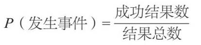
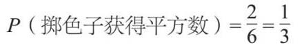
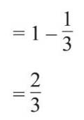
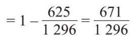
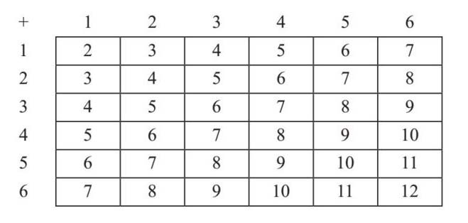
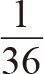
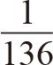
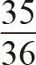
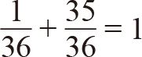
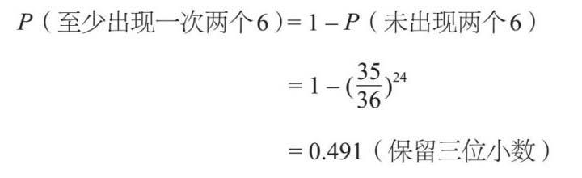

的概率可以称为有希望或可能。当概率低于
时，即表示不太可能或不可能。如果概率是
（或50%），就说明这两种结果的概率均等。
的概率可以称为有希望或可能。当概率低于
时，即表示不太可能或不可能。如果概率是
（或50%），就说明这两种结果的概率均等。我们总是会考虑概率的问题。几乎任何活动都存在某种程度的风险，而风险只是概率的另一种险恶的叫法。概率游戏非常流行。55%的英国人都曾赌博，不管是在赌场下赌注，玩彩票、网上扑克，还是在水果机上押注。

在数学家看来，结果指的是某事发生的后果。例如，如果我正常掷色子，有6种可能的结果。如果一次掷两个色子并且计算数字之和，就有11种可能的结果（2~12）。
每一个结果都有一定的可能性。概率的范围在0（不可能）和1（确定）之间，也就是说概率可以显示为分数、小数或百分数。超过
的概率可以称为有希望或可能。当概率低于
时，即表示不太可能或不可能。如果概率是
（或50%），就说明这两种结果的概率均等。
事件是指你想要计算出概率值的结果（或一组结果）。例如，如果我再次掷色子，得到数字6就是一个事件。一些事件是互相排斥的，这意味着它们不可能同时发生。例如，如果我从一套卡片中随机选择一张，我就不可能既选择一张方块又选择一张红心。两者是相互排斥的。但是，我可以选择一个方块和一位国王。这两者并不相斥，因为我可能抽到了一张方块K。
我们在计算概率时，经常会遇到一些假设。例如，我们通常假设掷出的色子公平或不偏不倚，也就是说出现每个结果的概率相等。我们还假设事件链是独立的。如果我掷色子得到一个6，它不会影响下一次掷色子的结果。
计算概率的神奇公式是：

P （发生事件）是概率的简写。如果我想计算掷色子可以获得平方数的概率，我知道在6种可能的结果（1, 2, 3, 4, 5, 6）中，有两个（1和4）平方数是正确的结果。我可以这样写：

我在最后把这个计算分式化简到了最简单的形式。现在我知道了掷色子获得平方数的概率，我可以利用已经计算出的概率P （掷色子获得平方数），来求出掷色子获得的非平方数的概率。
P （掷色子获得非平方数）=1–P （掷色子获得平方数）

17世纪50年代，数学家皮埃尔·德·费马和布莱兹·帕斯卡开始从数学的角度考虑概率。一个职业赌徒曾向费马求教，下面哪一种概率更高：
• 掷4次色子至少出现一6。
• 每次掷两个色子，共掷24次，至少出现一次两个6。
凭直觉来判断，上述两情况，应该后者的发生概率更高，因为掷色子的次数比前者多。下面让我们逐个看看。
当我重复一个事件时，每个事件可能出现的结果会增加。掷硬币有两种结果，但投两次有4种结果：正正、正反、反正、反反。如果我投了三次硬币，就会有2×2×2=8种可能的结果。同理，掷4次色子将有6×6×6×6=1 296种可能的结果。但是什么样的结果算是成功的呢？如果出现一个6、两个6、三个6以及四个6，都是有效的结果，我们可以据此计算出不同的组合。
真正有用的关键词是“至少出现一次”，也就是说“非零”。我们在上面看到，某事件未发生的概率是用1减去该事件发生的概率。所以：
P （至少出现一次6）=1–P （未出现一次6）
掷色子不出现6的方法有5种，所以如果掷4次色子，不出现6的结果共有5×5×5×5=625种，即：
P （至少出现一次6）=1–P （未出现一次6）

掷4次色子至少出现过一次6的概率为51.8%。
一次掷两个色子并计算和是很多游戏的支柱。由于某次掷色子得数的概率比较抽象，所以我做了一张表格，这样更直观些。所有的结果都可以显示出来：

这个表被称为概率空间图。我们可以看到有36个概率相等的结果。7出现得最多，因为它的组合个数最多。两个6（共12）只出现了一次，所以它的发生概率是

。与前面的例子非常相似，“至少出现一次”的意思是“非零”，所以我们可以看一下在24次掷投中不产生两个6的概率。如果出现两个6的概率是

，那么不出现的概率就一定是
，因为
。
所以，在24次投掷中至少出现一次两个6的概率是49.1%。可见，对第一种情况下注是明智的，但不要下太多。这种与预期相反的结果给赌徒敲响了警钟，想赢可没那么容易。
生日问题最初是由乌克兰工程师李察·冯·米塞斯（Richard Von Mises，1883—1953）提出的。概率问题往往会产生反直觉的结果，这里也不例外。你去一个咖啡厅，除非里面有几百人，否则似乎找不到生日相同的两个人，因为一年有365天。然而，由于我们所考虑的人数目非常大，所以实际的计算结果显示，如果只有23人出席，其中任意两人的生日是同一天的概率达到50%。如果有70个人，这个概率就会上升到99.9%。